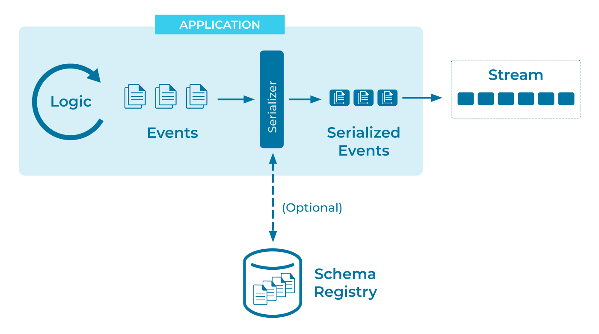

Event Serializer
Data has a long lifecycle, often outliving the programs that originally gathered and stored it. And data demands a broad audience - the more accessible our data is, the more departments in our organization can find use for it.
In a successful system, data gathered by the sales department in one year may prove invaluable to the marketing department a few years later, provided they can actually access it.
For maximum utility and longevity, data should be written in a way that doesn't obscure it from future readers and writers. The data is more important than today's technology choices.
How does this affect an event-based system? Are there any special concerns for this kind of architecture, or will the programming language's serialization tools suffice?
Problem
How can I convert an event into a format understood by the event streaming platform and applications that use it?
Solution

Use a language-agnostic serialization format. The ideal format would be self-documenting, space-efficient, and designed to support some degree of backwards and forwards -compatibility. We recommend Avro. (See "Considerations".)
An optional, recommended step is to register the serialization details with a schema registry. A registry provides a reliable, machine-readable reference point for Event Deserializers and Schema Validators, making event consumption vastly simpler.
Implementation
For example, we can use Avro to define a structure for Foreign Exchange trade deals as:
{"namespace": "io.confluent.developer",
"type": "record",
"name": "FxTrade",
"fields": [
{"name": "trade_id", "type": "long"},
{"name": "from_currency", "type": "string"},
{"name": "to_currency", "type": "string"},
{"name": "price", "type": "bytes", "logicalType": "decimal", "precision": 10, "scale": 5}
]
}
...and then use our language's Avro libraries to take care of serialization for us:
FxTrade fxTrade = new FxTrade( ... );
ProducerRecord<long, FxTrade> producerRecord =
new ProducerRecord<>("fx_trade", fxTrade.getTradeId(), fxTrade);
producer.send(producerRecord);
Alternatively, with the streaming database ksqlDB, we can define an Event Stream in a way that enforces that format and records the Avro definition using Confluent’s Schema Registry:
CREATE OR REPLACE STREAM fx_trade (
trade_id BIGINT KEY,
from_currency VARCHAR(3),
to_currency VARCHAR(3),
price DECIMAL(10,5)
) WITH (
KAFKA_TOPIC = 'fx_trade',
KEY_FORMAT = 'avro',
VALUE_FORMAT = 'avro',
PARTITIONS = 3
);
With this setup, both serialization and deserialization of data is performed automatically by ksqlDB behind the scenes.
Considerations
Event Streaming Platforms are typically serialization-agnostic, accepting any serialized data from human-readable text to raw bytes. However, by constraining ourselves to more widely-accepted, structured data formats, we can open the door to easier collaboration with other projects and programming languages.
Finding a "universal" serialization format isn't a new problem, or one unique to event streaming. As such we have a number of technology-agnostic solutions readily available. To briefly cover a few:
- JSON. Arguably the most successful serialization format in the history of computing. JSON is a text-based format that's easy to read, write and discover1, as evidenced by the number of languages and projects that produce and consume JSON data across the world with minimal collaboration.
- Protocol buffers. Backed by Google and supported by a wide variety of languages, Protobuf is a binary format that sacrifices the discoverability of JSON for a much more compact representation that uses less disk space and network bandwidth. Protobuf is also a strongly-typed format, allowing enforcement of a particular data schema from writers, and describing the structure of that data to readers.
- Avro. A binary format similar to Protocol Buffers, Avro's design has focuses on supporting the evolution of schemas, allowing the data format to change over time while minimizing the impact to future readers and writer.
While the choice of serialization format is important, it doesn't have to be set in stone. It's straightforward to translate between supported formats with ksqlDB. For more complex scenarios, we have several strategies for managing schema migration:
- Schema Compatibility discusses the kinds of "safe" schema changes that Avro is designed to handle transparently.
- Event Translators can convert between different encodings to aid consumption by different systems.
- Schema Evolution discusses splitting and joining streams to simplify serving consumers that can only handle certain versions of the event's schema.
- An Event Standardizer can reformat disparate data encodings into a single unified format.
- And as a fallback we can push the problem to the consumer's code with a Schema-on-Read strategy.
References
- The counterpart of an event serializer (for writing) is an Event Deserializer (for reading).
- Serializers and deserializers are closely related to Data Contracts, in which we want to adhere to a specific serialization format and constrain the individual events to a certain schema within that format.
- See also: Event Mapper.
Footnotes
1 Older programmers will tell tales of the less-discoverable serialization formats used by banks in the 80s, in which deciphering the meaning of a message meant wading through a thick, ring-bound printout of the data specification which explained the meaning of "Field 78" by cross-referencing "Encoding Subformat 22".